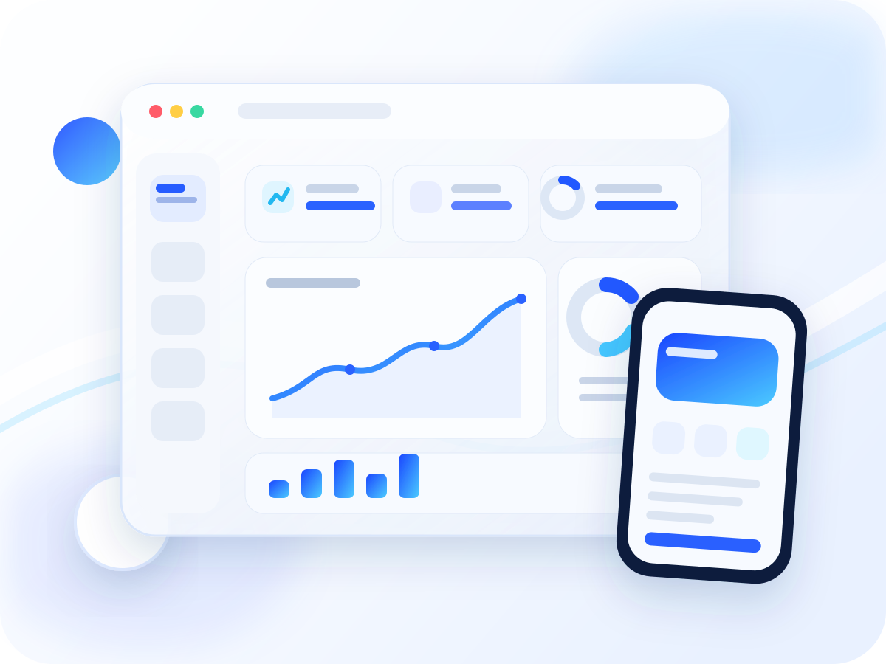
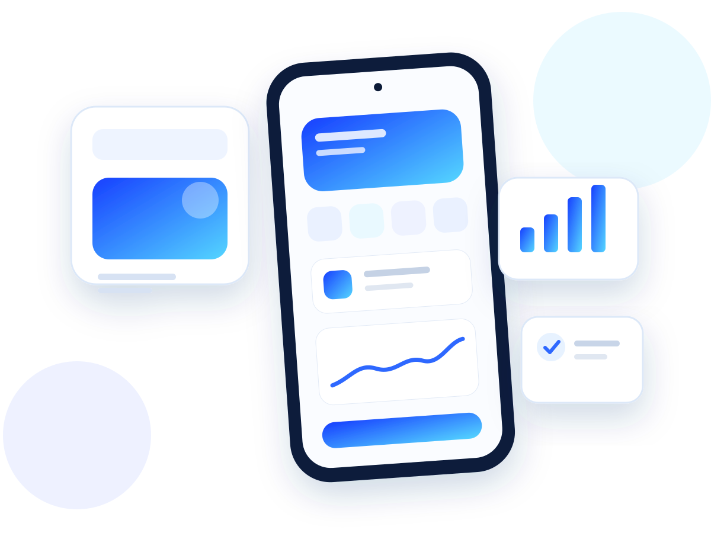
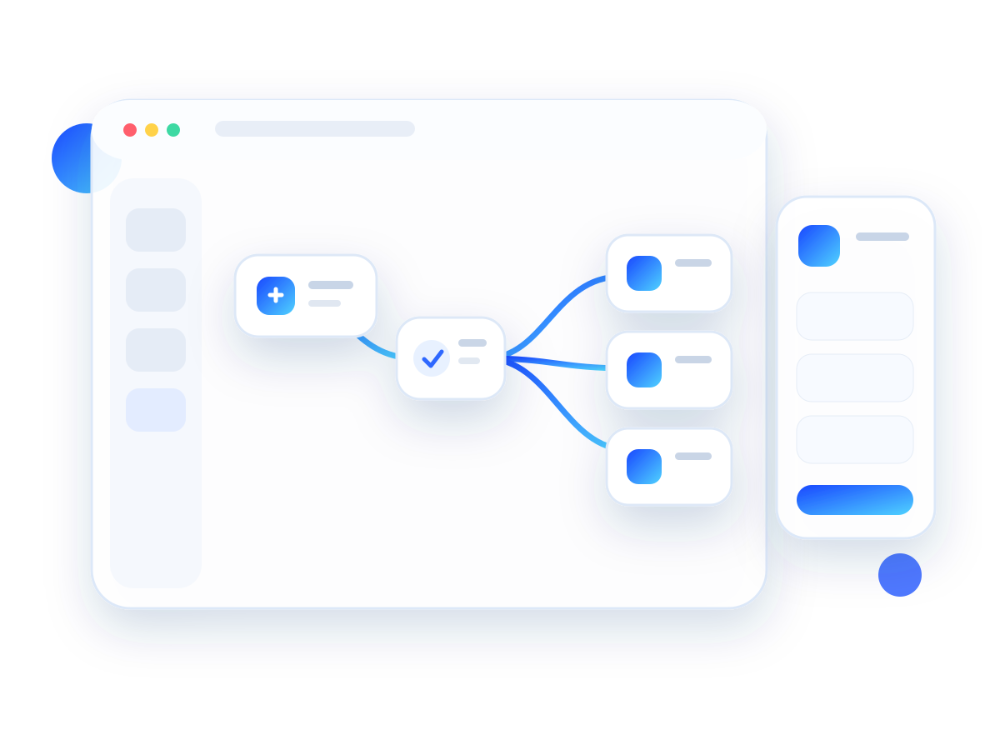
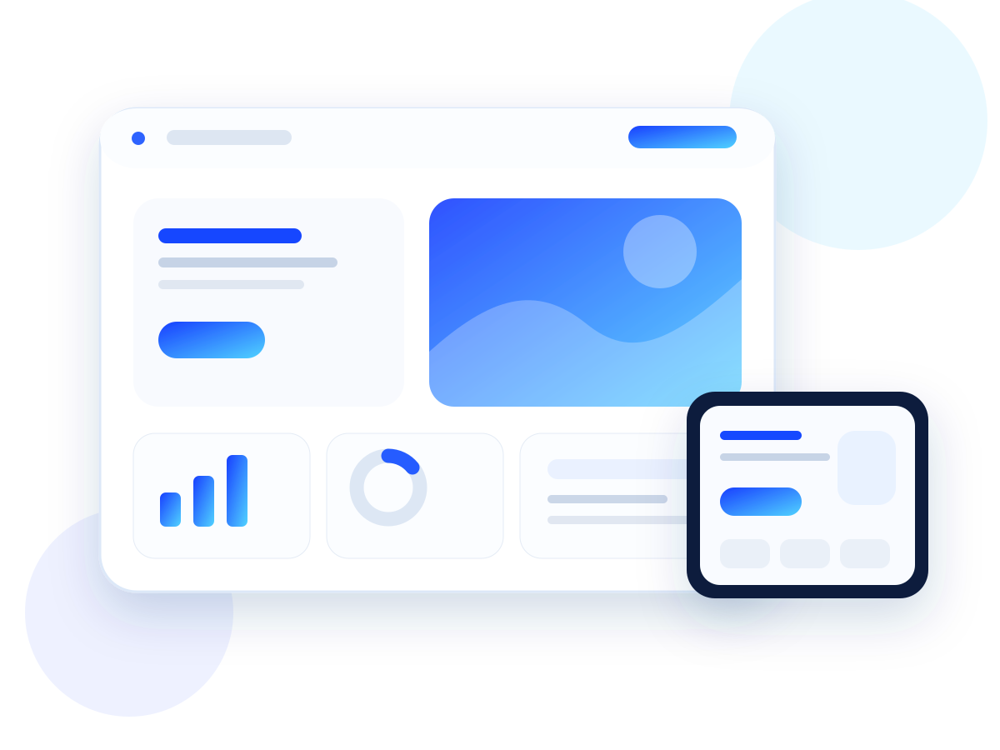

La función aparece porque hace falta, no para llenar una lista.
Software con propósito
Ideas digitales hechas para servir.
Tu presencia digital también habla por tu negocio. Diseñamos webs, apps y herramientas que transmiten confianza, explican mejor lo que ofrecés y hacen más simple dar el siguiente paso.

● Web · Android · Automatización
Una interfaz que se entiende, se siente propia y acompaña al producto.
Probar, corregir y pulir también forma parte de construir.
Presencia digital
No alcanza con estar online.
Una buena página no existe solo para “tener web”. Tiene que presentar tu negocio con claridad, responder dudas, mostrar lo que hacés y dar una razón concreta para confiar en vos.
Tu Instagram puede llamar la atención. Tu web puede ordenar, explicar y convertir ese interés en una oportunidad real.
Un espacio propio, bien diseñado y coherente con tu marca transmite profesionalismo antes del primer mensaje.
Servicios, trabajos, preguntas frecuentes y contacto organizados sin depender del formato de una red social.
La información importante sigue disponible aunque en ese momento no estés respondiendo mensajes.
Una visita entiende qué ofrecés, por qué elegirte y cómo avanzar sin tener que preguntarte todo desde cero.
Diseño, producto y tecnología en una sola experiencia.
No hacemos una página para mostrar que sabemos programar. La hacemos para demostrar criterio, detalle y la calidad que queremos llevar a cada proyecto.

01 · ANDROID
Aplicaciones Android
Cuando tu idea necesita vivir en el teléfono y resolver algo de forma directa.

02 · AUTOMATIZACIÓN
Extensiones y flujos
Cuando una tarea repetitiva puede convertirse en un proceso más rápido y simple.

03 · WEB
Productos web
Cuando necesitás un lugar propio para mostrar, explicar, vender o recibir consultas.
Qué podemos construir con vos.
Elegimos la herramienta según el problema: web, Android, navegador o mejora sobre algo que ya existe.
01 · ANDROID
Aplicaciones Android
Desde una primera versión funcional hasta una app lista para probar o publicar.
02 · NAVEGADORESExtensiones
Funciones concretas y automatizaciones integradas al navegador.
03 · WEBPáginas y aplicaciones web
Sitios pensados para generar confianza, explicar mejor y facilitar el contacto.
04 · EVOLUCIÓNMejoras sobre proyectos existentes
Correcciones, rediseños, nuevas funciones y preparación para publicar.
Forma de trabajo
Menos ruido. Más utilidad.
Antes de pensar en tecnología, buscamos entender qué hay que resolver y cuál es el camino más simple para hacerlo bien.
Zenix
01Entender
02Diseñar
03Construir
04Probar
Tu negocio ya existe. La pregunta es cómo se ve cuando alguien lo busca.
Una presencia digital profesional no reemplaza lo que hacés bien: lo muestra mejor. Esa es la diferencia entre simplemente estar en internet y usar internet a favor de tu negocio.